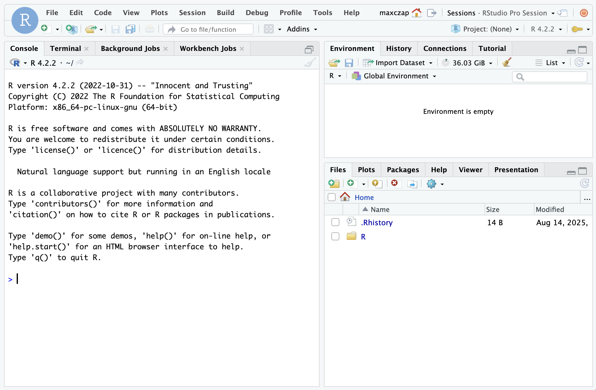

Background
Let’s get started working on a remote server! Working on a remote server is one of the payoffs for the learning curve going from the GUI to the CLI.
Compared to your personal computer, remote servers can be beefy. They let you scale your analysis up to bigger datasets and more computationally intensive algorithms. Some of the advantages of using remote servers for data science are:
- Power More CPUs/Cores, more RAM
- Capacity More disk space and generally faster storage
- Security Data are spread across multiple drives and have nightly backups
- Collaboration Shared folders for code, data, and other materials; same software versions
Goals
In this session you’re going to use the CLI and RStudio Workbench on the remote server. Along the way, you’ll learn how to:
Connect to Workbench with the CLI
Configure git and GitHub remotely
Interact with the server version of RStudio
You’re also going to create your first merge conflict - an inevitable challenge in coding collaborations. Tomorrow, you’ll learn how to resolve the conflict.
Instructions
Connect to Workbench with the CLI1
- Connect to campus VPN.
- Open up Terminal (mac) or GitBash (windows)
- Run the following command:
ssh {username}@workbench-1.bren.ucsb.edu - Type in your Bren password
- You’ll know if you connected successfully if the last line says
{username}@workbench-1like the picture below.
Configure git2
Configure your git user name and email.
git config --global user.name "Jane Doe"
git config --global user.email janedoe@example.comTell git to hold on to your GitHub Personal Access Token between connections.
git config --global credential.helper 'cache --timeout=10000000'Check that your configuration looks right.
git config --list --globalCheckpoint 1
Now that you’ve connected to Workbench with the CLI and configured git, answer the following questions.
Q1: What directory are you in?
Q2: Are there any files in your directory?
Q3: There’s a folder in Workbench’s root called courses. How would you look at the contents of that folder?
Connect to Workbench with the RStudio GUI
- Open your browser and navigate to https://workbench-1.bren.ucsb.edu.
- Log in with Bren credentials.
- Start an RStudio session by selecting “New Session”. It may take a few seconds to start.
You should now see RStudio in your browser as below.

Configure GitHub
- Return to the Workbench RStudio interface.
- In the console, run
install.packages("usethis"). - Then, run
usethis::create_github_token(). - The GitHub PAT dialog will appear in your browser. This should be familiar, you’ve done this before on your computer.
- Create your PAT and set your GitHub credentials on Workbench by running
gitcreds::gitcreds_set(). - Run
usethis::git_sitrep()and verify your git and GitHub configurations are complete.
Clone your repo
- Navigate to your EDS 214 project repo on GitHub. Copy the URL.
- Return to the Workbench RStudio interface. Create a new RStudio project from your GitHub repo.
Checkpoint 2
Switch to the terminal you used to connect to Workbench with the CLI. Verify your repo’s files are now in your home directory.
Create a merge conflict
Merge conflicts occur when the same line of code in a repository has been edited in two different places. One way to generate a merge conflict is when you’re editing the same repo from two places (e.g., your personal computer and the remote server). Another way is when two people are working on the same code base simultaneously. Both of these are likely to happen during your capstone!
Merge conflicts look scary, but they are a necessary phenomenon in data science. Today you’ll create a conflict, tomorrow you’ll fix it.
Edit a line on the remote server
- Choose a line in your spaghetti code that you wrote yesterday and edit it. You can change the name of a variable, for example.
- Commit your change using the Git pane.
- Push the change to GitHub.
Edit the same line locally
- Open your EDS 214 project in RStudio locally (not on Workbench). Find the same line of code and edit it in a different way. If you changed a variable name on the remote server, for example, change it to something else.
- Commit your change.
- Push.
Uh oh!
When you push the second time, you’ll see an error like the one below.
To https://github.com/[username]/[repo]
! [rejected] HEAD -> main (fetch first)
error: failed to push some refs to 'https://github.com/[username]/[repo]'
hint: Updates were rejected because the remote contains work that you do not
hint: have locally. This is usually caused by another repository pushing to
hint: the same ref. If you want to integrate the remote changes, use
hint: 'git pull' before pushing again.
hint: See the 'Note about fast-forwards' in 'git push --help' for details.This is a good error! It prevents you from accidentally overwriting your own or your collaborator’s work. Git calls this a merge conflict, and we’ll cover how to fix them tomorrow.
Recap
The Workbench remote server grants you access to greater computational resources and is a platform for collaboration that you’ll use extensively in your capstone. Today, you learned how to:
Use
sshto connect to Workbench (the CLI)Configure git and GitHub so you can keep getting the benefits of version control
Use RStudio on the server directly through your browser
Footnotes
These instructions are also available on the MEDS Computational Server Guide↩︎
These instructions are also available in the MEDS Software Installation Guide↩︎